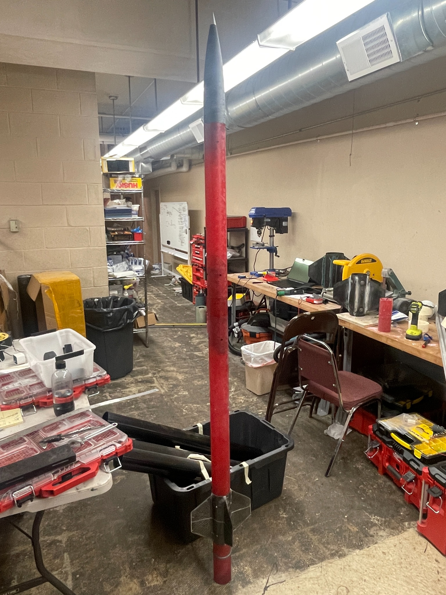
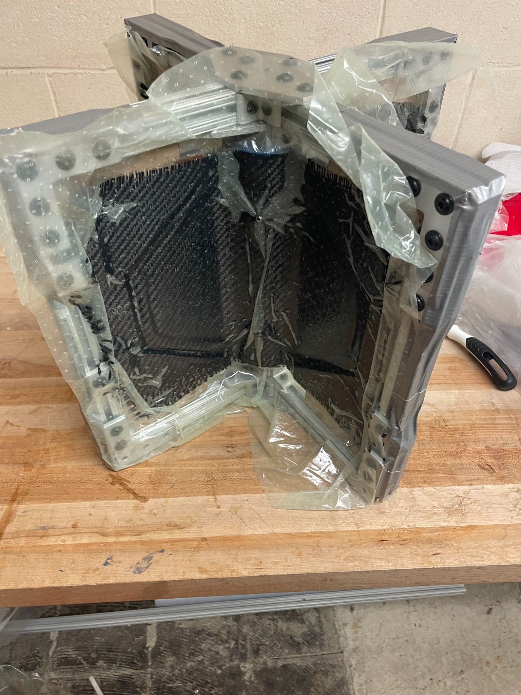
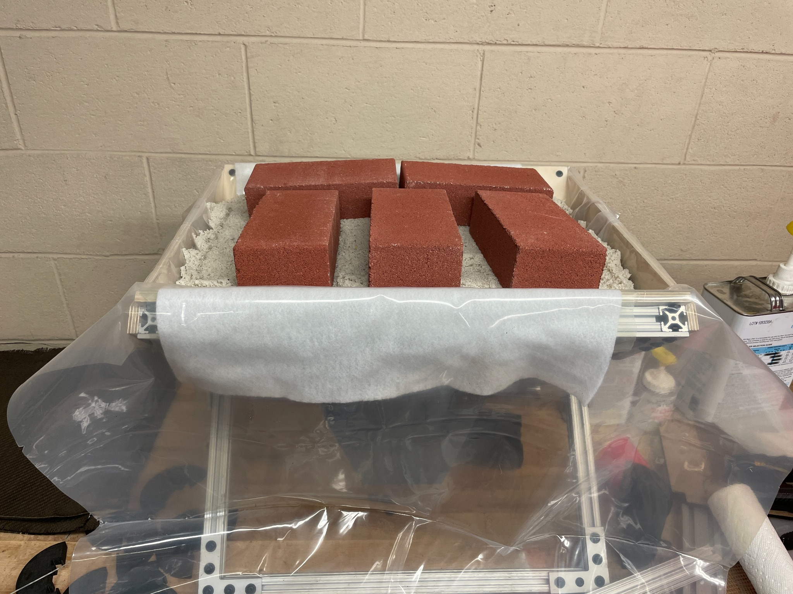
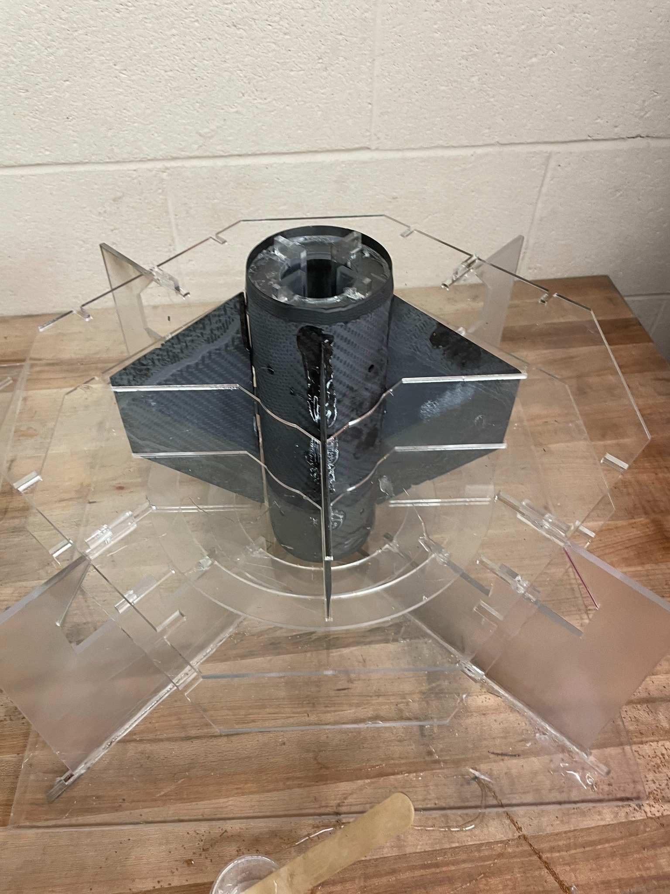
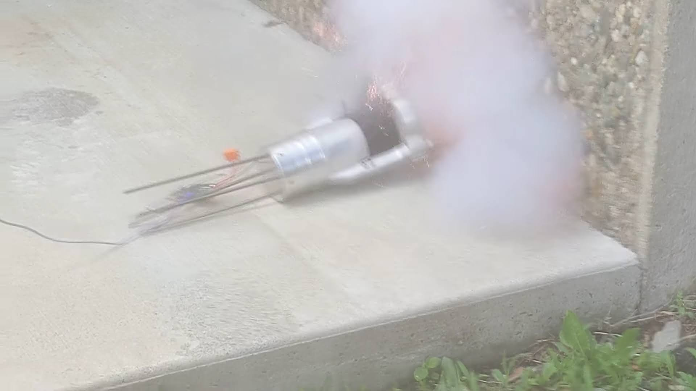
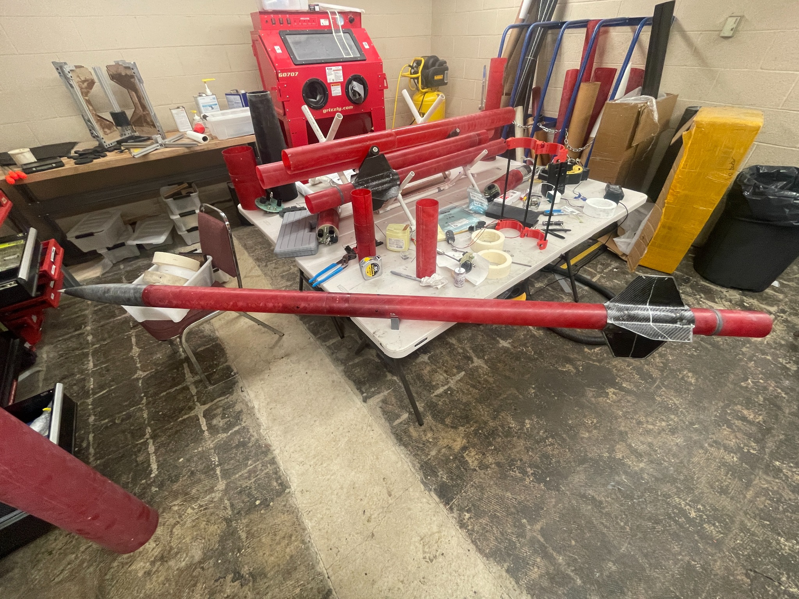

Staging mechanism
I completed the external staging mechanism and designed a next-generation internal concept for later development.
Learn Ventures · Aerospace Projects Consultant
Mechanical redesign, composite fabrication, staging hardware, and flight-ready integration for a proof-of-concept rocket targeting the Kármán line.

01
Project Overview
At Learn Ventures, I worked on a high-powered three-stage rocket proof of concept built around commercially available solid rocket motors.
My work included mechanical redesign in SolidWorks, staging hardware, composite fabrication, and integration of flight-critical components. The approximately 20 ft vehicle used successively smaller 8 in, 6 in, and 4 in diameter stages.
Composite Manufacturing Development
The complex fin geometry made conventional vacuum consolidation difficult, so the manufacturing method was redesigned around the tooling and resources available.


Rather than continuing to fight sealing and consolidation around the fin geometry, I moved to a mechanically loaded process that could apply pressure without relying on vacuum.
The revised method used inexpensive materials to create distributed forming pressure while retaining the wet carbon-fiber layup, custom tooling, and cure process needed for the flight hardware.
Fin System
The fin assemblies combined composite structures with custom tooling and fixtures to hold geometry during fabrication.

Pure carbon-fiber fins were fabricated using wet layup. Fin flutter was evaluated during the design process, and the flight hardware survived the mission and landing.
The project combined CAD and analysis with extensive fabrication, assembly, and iteration on full-scale hardware.
Staging + Avionics
Reliable staging required mechanical interfaces, redundant initiation hardware, and flight-computer integration.

I completed the external staging mechanism and designed a next-generation internal concept for later development.
Each stage incorporated eight black-powder charges with redundancy to improve staging reliability.
A TeleMetrum-based flight computer was adapted for the vehicle, with added redundancy and unnecessary features removed for the application.
Flight Result
The redesigned vehicle reached approximately 15 km altitude versus a 17 km OpenRocket/RockSim prediction, demonstrating the integrated mechanical, composite, staging, and avionics systems in flight.
